GitHub の基本
GitHub とは
ソフトウェア開発のプラットフォームであり、Git ホスティングサービスのひとつです。
ホスティングサービスというのはサーバーの領域をインターネット経由で貸し出すサービスで、
GitHub の場合は Git で管理されているプロジェクト（ソースコードや設定ファイル）を格納する領域（リモートリポジトリ）を提供しています。
使用用途も様々で、チームメンバーのみがアクセスできるようにすることもできれば、オープンソースとして提供するために世界中のエンジニアにアクセスしてもらえるようにすることもできます。
また、リモートリポジトリ以外にも課題管理やWiki、コードレビュー、CI連携などのソフトウェア開発には欠かせないサービスも提供しています。
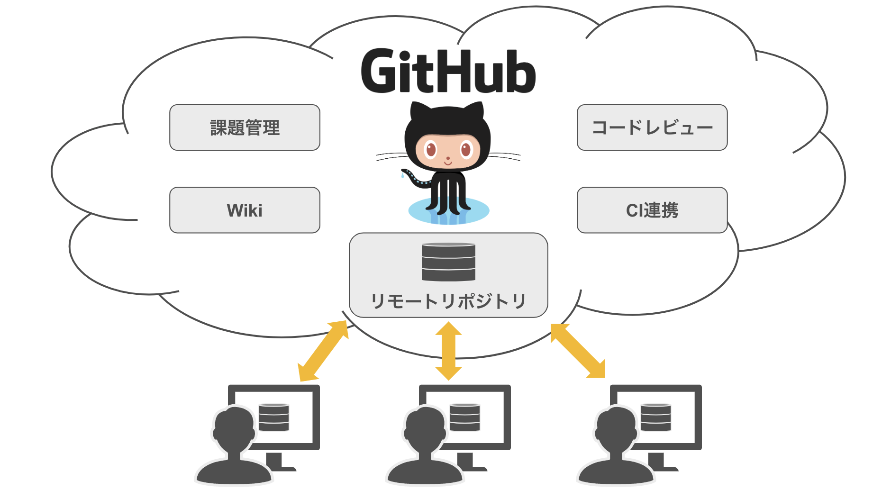
GitHub を始めてみよう
GitHub アカウントを作成しよう
GitHubを利用するためにはアカウントを作成する必要があります。
以下の手順に沿って GitHub アカウントを作成しましょう。
GitHub アカウントを作成するにはメールアカウントが必要になります。
- GitHub の公式サイトにアクセスしましょう。
https://github.com/ - 画面右上の Sign up をクリックしましょう。 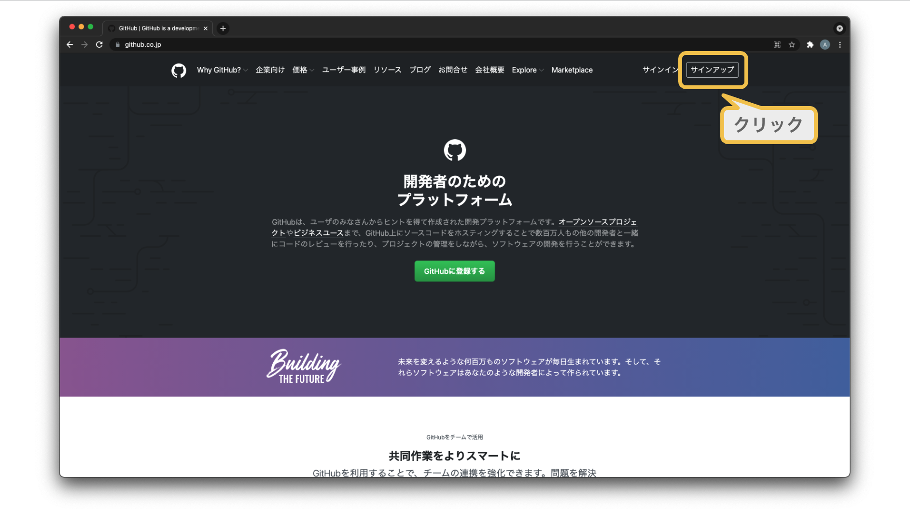
- メールアドレスを入力後、Continue ボタンをクリックしましょう。 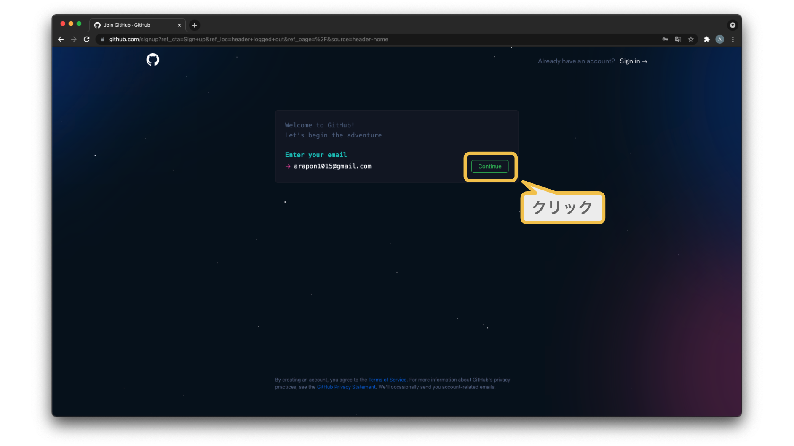
- パスワードを入力後、Continue ボタンをクリックしましょう。
※パスワードは任意の内容でOKです！ 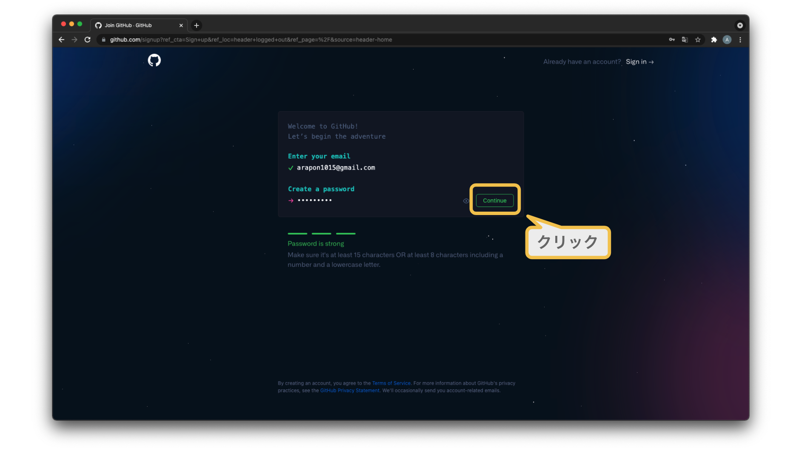 - ユーザーネームを入力後、Continue ボタンをクリックしましょう。 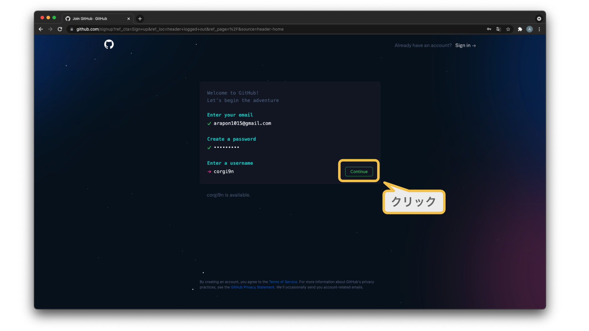
- 入力したメールアドレス宛に GitHub から認証コードが送られます。
届いた認証コードを画面に入力しましょう。
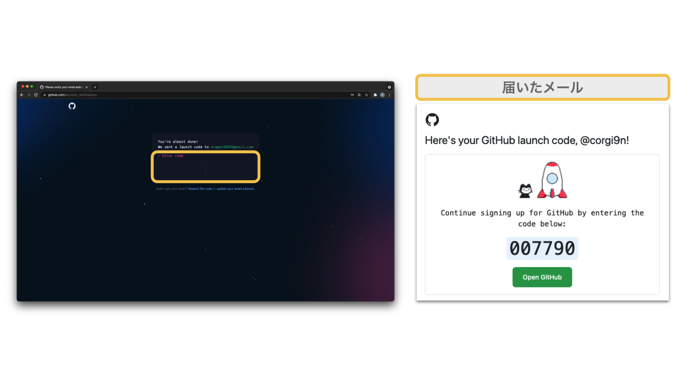 - ここからは個人設定となりますが、必須事項ではないので割愛します。
画面下部の Skip personalization をクリックしましょう。
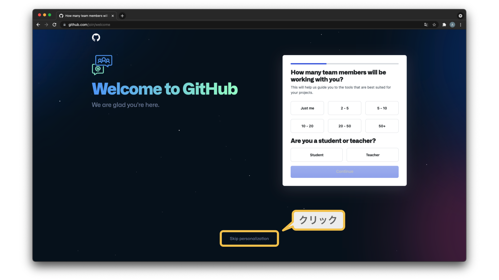 - 以下の画面が表示されればアカウントの作成は完了です！ 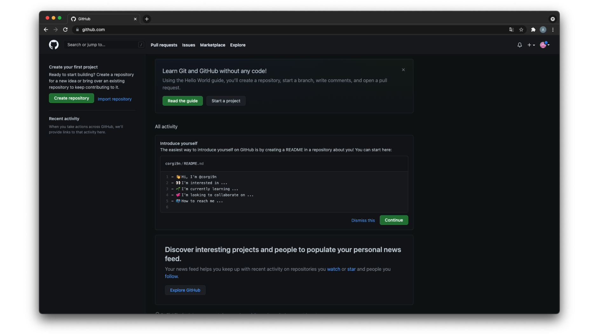
リモートリポジトリを作成しよう
GitHub アカウントがあれば GitHub 上にリモートリポジトリを作成することができます。
次の手順に沿って作成してみましょう。
- GitHubにログイン後、Create repository ボタンをクリックしましょう。 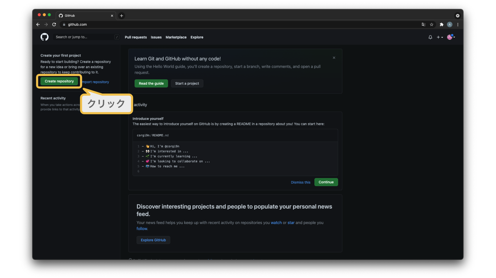
- 以下の画面が表示されましたら、以下の手順でリモートリポジトリを作成しましょう。
- リポジトリの名前を設定しましょう。今回は
tutorialとしましょう。 - 他のユーザーがリポジトリにアクセスできないように非公開にしましょう。
Publicを選択すると世界中の GitHub ユーザーがアクセスすることができます。
Privateを選択するとリポジトリを作成したアカウントのみがアクセスすることができます。
- リポジトリの名前を設定しましょう。今回は
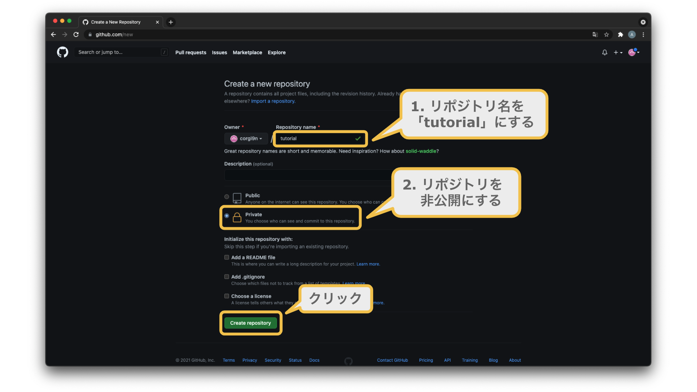 3. 以下の画面が表示されればリモートリポジトリの作成は完了です！ 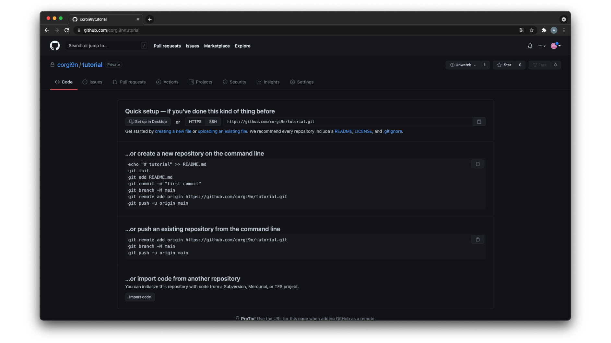
リモートリポジトリにチームメンバーのみを共有したい場合
Private を選択することで他の GitHub ユーザーはアクセスできなくなりますが、チームメンバーにはアクセスできるようにしたいですよね。
このようなときは GitHub のリポジトリへ招待する機能を使いましょう。
- 招待したいリモートリポジトリの画面で Setting を選択しましょう。
- Settings 画面の左側に表示されているメニューから Collaborators を選択しましょう。
- Add people ボタンをクリックしましょう。
- 入力欄に GitHub のユーザーネーム（またはメールアドレス）を入力して、招待したいユーザーを選択しましょう。
ファイルをアップロードできるようにしよう
GitHub上にリモートリポジトリを用意できましたら、次はファイルをアップロードできるようにしましょう。
GitHub にファイルをアップロードするための通信手段として、HTTPSとSSHの2種類から選ぶことができます。
HTTPSもSSHもともに暗号化した上で送るためセキュリティの観点では優劣はつきませんが、HTTPSの場合は GitHub にアクセスするたびにユーザー名とアクセストークンの確認を求められるため、頻繁に GitHub を利用するのであればSSHで通信を行うことを推奨します。
また、HTTPSとSSHとではそれぞれ設定の手順が異なりますので注意しましょう。
HTTPS通信の場合
HTTPS通信でファイルをアップロードするにはアクセストークンが必要になります。
このアクセストークンは GitHub の設定画面で発行することができます。
次の手順に沿って作成してみましょう。
- 画面右上のアイコンをクリックしてしてメニューを表示します。
- メニュー内の「Settings」を選択します。
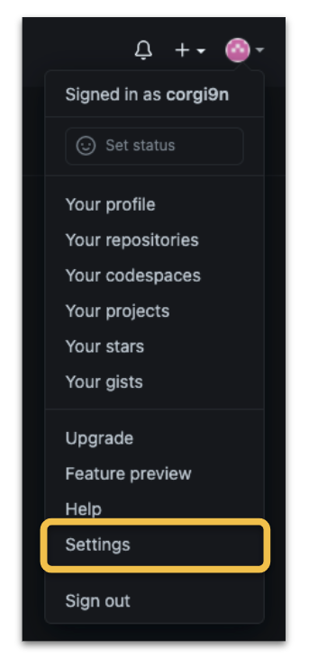 - 「Settings」画面のメニュー内の「Developer settings」を選択する。 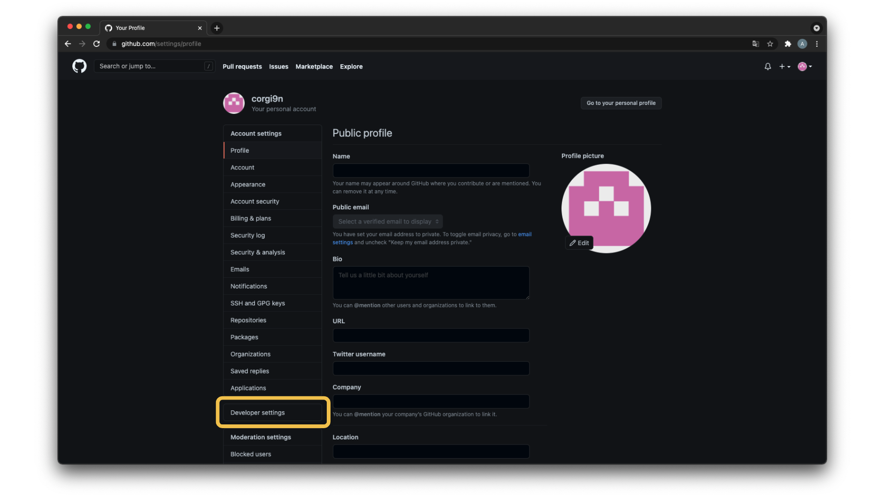
- 「Developer settings」画面のメニュー内の「Personal accesstoken」を選択する。 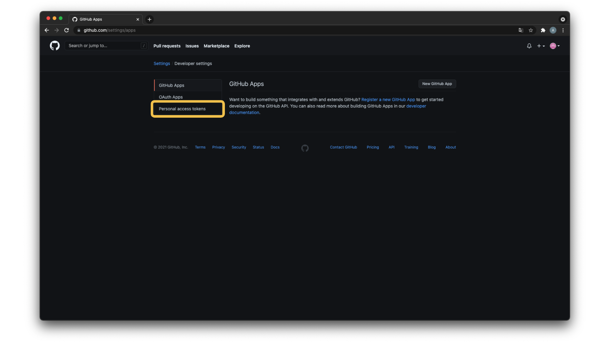
- 「Personal accesstoken」画面内の「Generate new token」ボタンをクリックします。 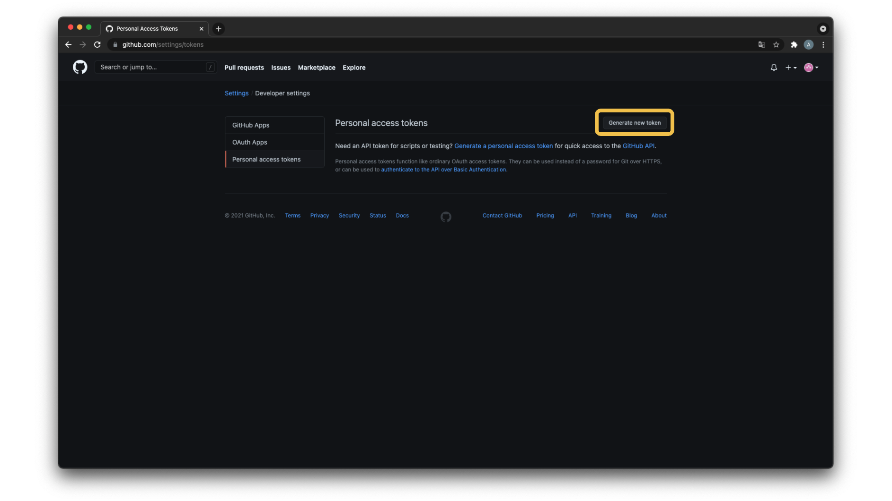
- Note に任意の文字列を入力し、画面最下部にある「Generate token」ボタンをクリックします。 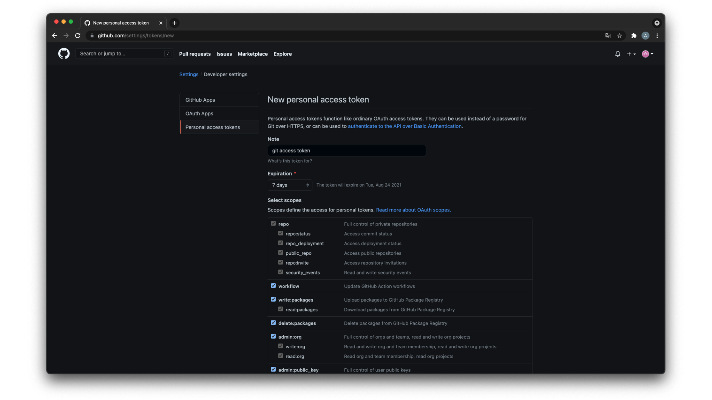
- 発行されたアクセストークンをコピーしましょう。 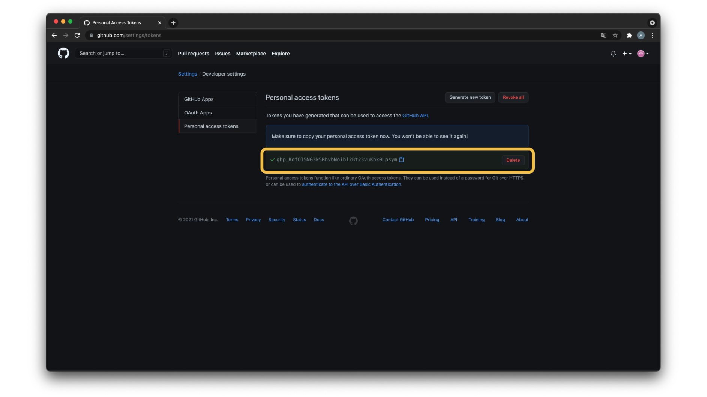
- ファイルをプッシュする際にコピーしたアクセストークンをペーストして実行しましょう。
SSH通信の場合
SSH（Secure Shell）通信は送信しているデータを暗号化していることが特徴です。
クライアントマシン（例えば、皆さんのPC）で秘密鍵と公開鍵を生成し、公開鍵を送信先の GitHub に設定することでSSH通信を行うことができます。
そして、GitHub 側は設定したアカウントと公開鍵を紐づけて管理することになります。
次の手順に沿って作成しましょう。
-
秘密鍵と公開鍵を格納するフォルダに移動しましょう。 ホームディレクトリの直下にある
.sshフォルダの直下に秘密鍵と公開鍵を置くことができます。
以下のコマンドで.sshフォルダに移動しましょう。cd ~/.ssh.sshフォルダがない場合は以下のコマンドで削除した上で移動しましょう。mkdir ~/.ssh -
秘密鍵と公開鍵を生成しましょう。 以下のコマンドで秘密鍵と公開鍵を生成することができます。
ssh-keygen -t rsaコマンドを実行すると以下の３点を確認されます。
①秘密鍵と公開鍵のファイルの名前
②秘密鍵と公開鍵のパスフレーズ
③秘密鍵と公開鍵のパスフレーズの再確認
以下のメッセージが表示されますが、必須の設定ではないためEnterキーをクリックすることでスキップすることができます。Generating public/private rsa key pair. Enter file in which to save the key (/Users/(username)/.ssh/id_rsa): Enter passphrase (empty for no passphrase): Enter same passphrase again: -
秘密鍵と公開鍵が生成されたことを確認しましょう。 lsコマンドで以下の２ファイルが生成されていることを確認しましょう。
- id_rsa
- id_rsa.pub
生成されたファイルのうち、id_rsa が秘密鍵、id_rsa.pub が公開鍵になります。
公開鍵である id_rsa.pub の内容を GitHub に設定することになります。 -
公開鍵を GitHub に設定しましょう。
- 「Settings」画面のメニュー内の「SSH and GPG keys」を選択しましょう。
- 「SSH and GPG keys」画面内の「New SSH key」ボタンをクリックしましょう。
- コマンドで公開鍵の内容をコピーしましょう。
【Macの場合のコマンド】
【Windowsの場合のコマンド】pbcopy < ~/.ssh/id_rsa.pubclip < ~/.ssh/id_rsa.pub -
- で表示した画面の Title に秘密鍵のファイル名を入力し、Key に 3. でコピーした内容を貼り付けましょう。
- 「Add SSH key」ボタンをクリックしましょう。
-
SSH接続ができているかを確認しましょう。 次のコマンドでSSH接続ができているかを確認することができます。
ssh -T git@github.com
以下のメッセージが表示されれば接続は成功しています。
Hi (account名)! You've successfully authenticated, but GitHub does not provide shell access.
接続がうまくいかなかった場合は手順通りに行えていない可能性があるので、もう一度見直してみましょう。